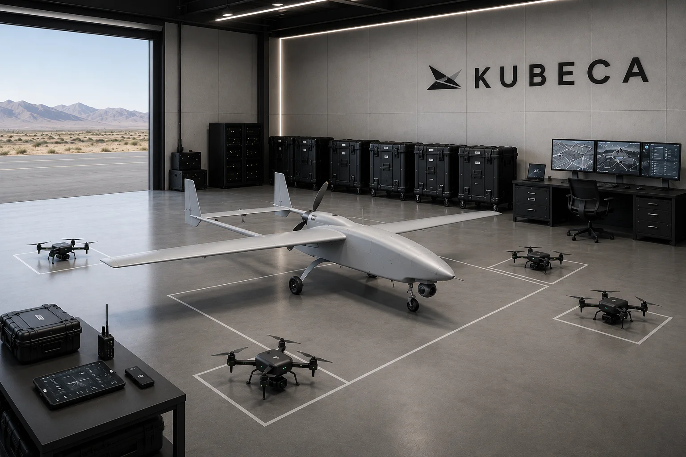
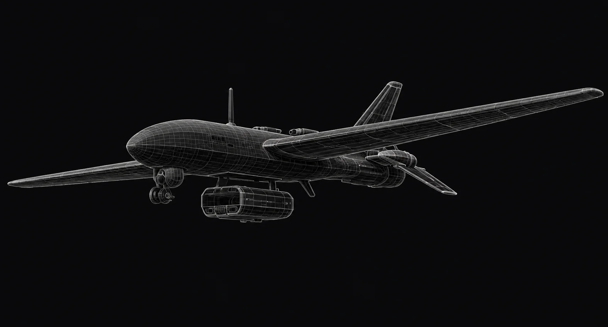

Develop components
Develop two UAV platforms, C2 mission software, and their shared onboard autonomy technology.

Technology / In development
Explore C2 mission software, modular fixed-wing aircraft, and autonomous micro-UAV development.
Explore the technology01 / System
Reach further.
Explore closer.
02 / Command
We are developing KUBECA C2 around the operator: mission planning, aircraft supervision, and system status in one workspace.
03 / Fixed wing
A modular fixed-wing platform designed around reach, remote access, and GNSS-denied navigation.
A common airframe supports the development of reconnaissance and carrier configurations with different mission payloads.
Platform development
04 / Micro-UAV
We use quadcopter simulation to develop exploration and mapping behaviors for confined spaces.
Simulation lets us examine autonomy behavior before physical flight validation.
Simulation development05 / Development approach
Each workstream contributes to the system. Individual component progress is distinct from a demonstration of integrated operation.
Develop two UAV platforms, C2 mission software, and their shared onboard autonomy technology.
Use simulation and platform tests to investigate specific development questions.
Evaluate how both platform types connect to mission software and human supervision.
Technology & collaboration
Talk with us about technology, integration, or collaboration.
Contact the team